| School Name | : Huonville Primary School |
|---|---|
| Province Code | : 63 |
| School Code | : 018 |
| Level | : 8 |
| Established | : 1970 |
| Motor | : Progress Through Endeavour |
The third largest Primary School in Lae District, and one of the oldest established schools in the country
BRIEF HISTORY
The current site of Huonville Primary School was once a forested wetlands covered with hard wood timber trees. The Australian Administration identified this portion of land and moved into the area in 1968 and harvested round logs to be sawn off and timber used for early infrastructure in the then Lae Town.
After the logs were harvested, the administration then engaged the prisioners at Buimo Correctional Services (CIS) to clear the land for a new school to be set up to cater for the children of the expatriate government employees, Pre-self-Government and Independance.
There was also an emergence of the Indigenous local population migrating to Lae from all over Papua New Guinea to supply the labor force market that was readily available with exiting times ahead. The need for adequate housing was identified hence housing project commenced around the school vicinity. This housed most of the pioneer students of Huonville.
The school was built by either Barclay Brothers or Thiess Watkins, two of the leading construction companies of that time.
Enrollment commenced and classes began in 1970 with 16 classrooms, 16 expatriate teachers and 480 pioneer students with the Head Teacher, Mr. Perry.
Today, Huonville has an average of 2,500 student population, 53 National Teachers with 8 Streams of classes from Grade 1 to 8.


From Left to Right: The Class of 1973_Standard 1; The Class of 1973_Standard 3 (Expatriate Class); The Class of 1973_Standard 3 (Expatriate Class)
SCHOOL DATA
The school data includes details about the student body, such as population ratios, gender distribution (male-to-female ratio), place of residence, and the number of students with disabilities, all recorded at a specific point in time. This information is submitted monthly to the District Education Office. The data is extracted from the School Registration System and is readily available and easily accessible at any time.

PROGRAMS & ACTIVITIES
Mini Cultural Show
In 2022, we hosted our first-ever Mini School Cultural Show. Students dressed in their traditional attire to celebrate, embrace, and take pride in their cultural heritage. The event also featured other significant activities, such as traditional food preparation, food preservation techniques, and the sharing of "tumbuna" stories, which highlighted the richness of our cultural traditions.
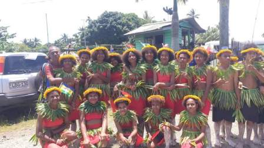 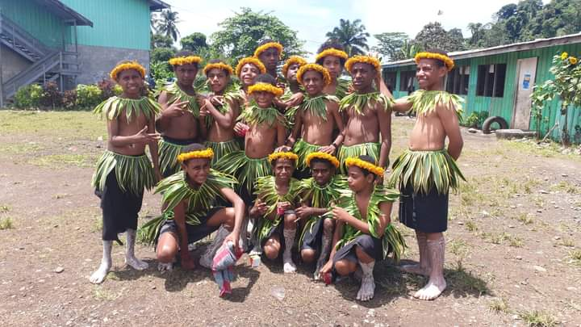 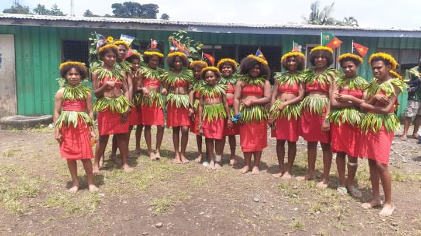
Inter-House School Carnival
Sports have always been an integral part of the curriculum, promoting physical activity while educating students on the latest sporting rules and ethics, both on and off the field. The annual school carnival serves as the highlight of these activities. In 2024, we hosted our Inter-School House Carnival from September 9th to 12th, culminating in the Pre-Independence Celebration on September 13th, 2024.
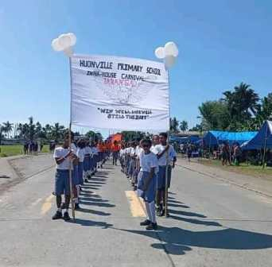 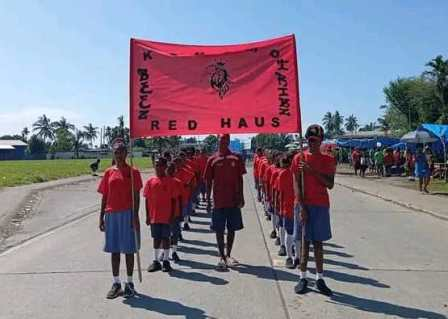 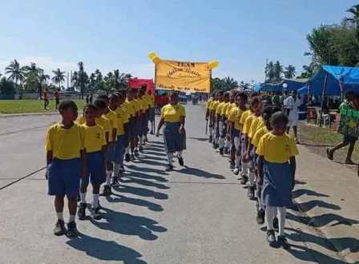 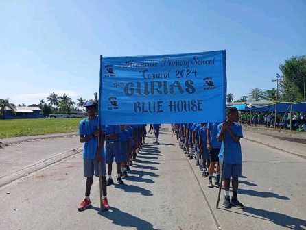 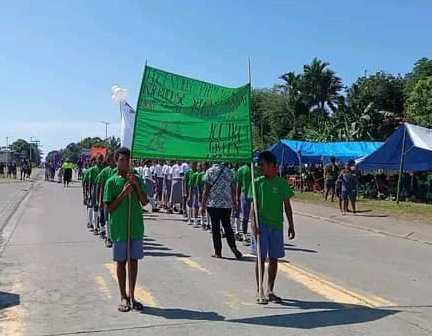 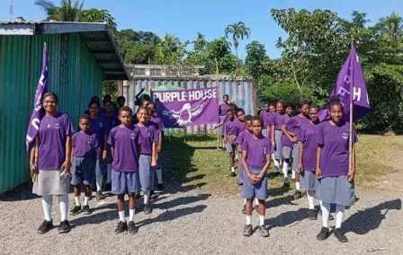 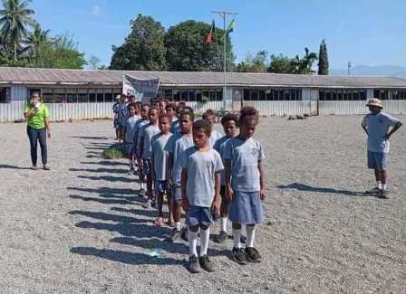 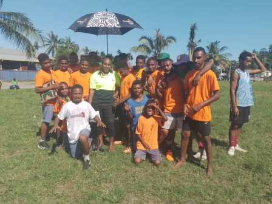 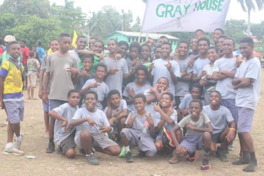 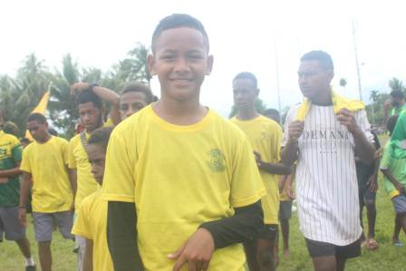
Teachers Day
Huonville's Board of Management, students, and parents recognize teachers as key stakeholders in nation-building and deeply appreciate their commitment to educating Papua New Guineans. To honor this dedication, the School Board of Management organizes the annual Teachers’ Day program, with support from students and parents/guardians.
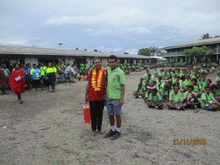 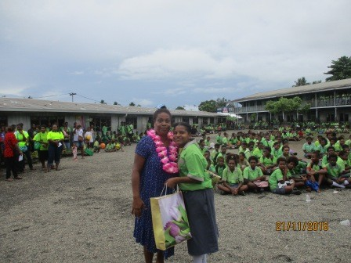 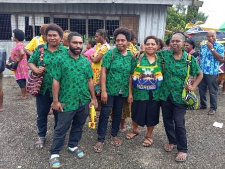 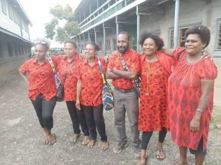 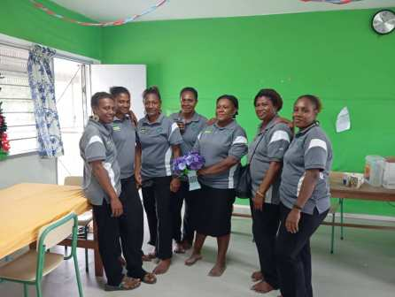 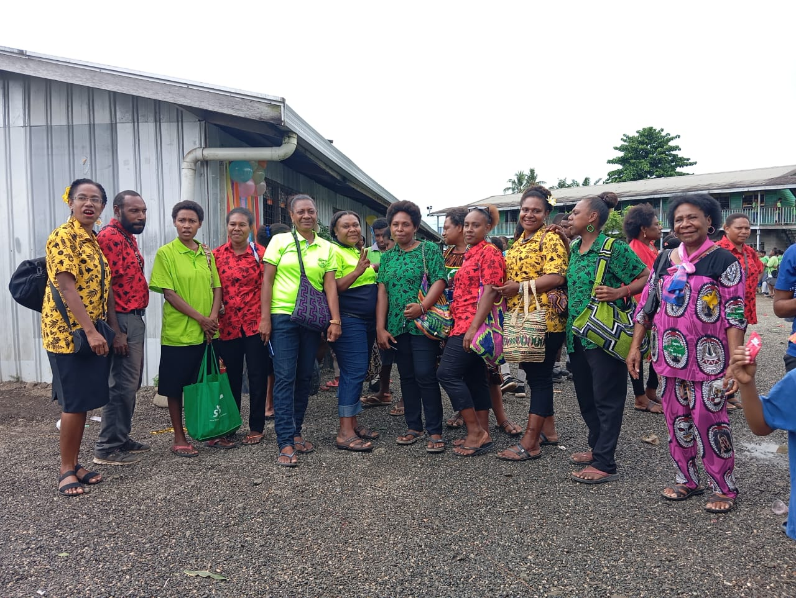
Community Service
In the first week of May 2025, Huonville Primary School took the initiative to clean Lae City as part of its community service. Students carried out cleanup activities around Cassowary Road, 7th Street, Top-town, and the Main Market area. This effort was made possible through the support of Lae City Authority (LCA), which provided waste bags, gloves, and masks.
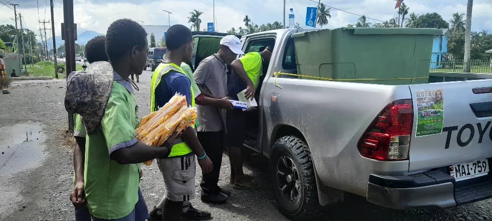 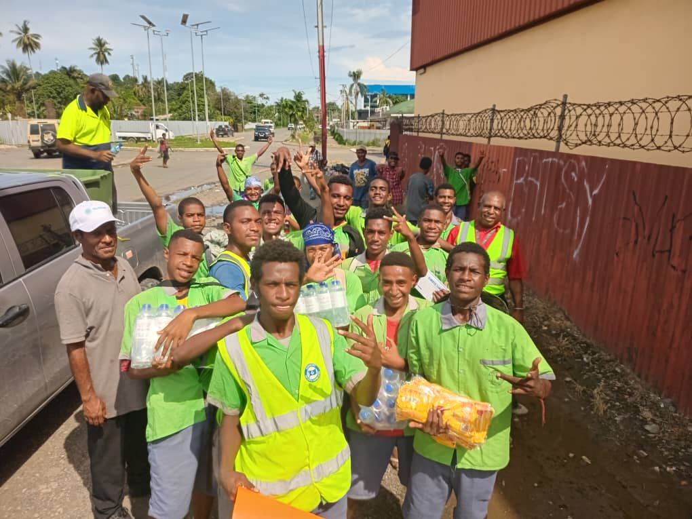 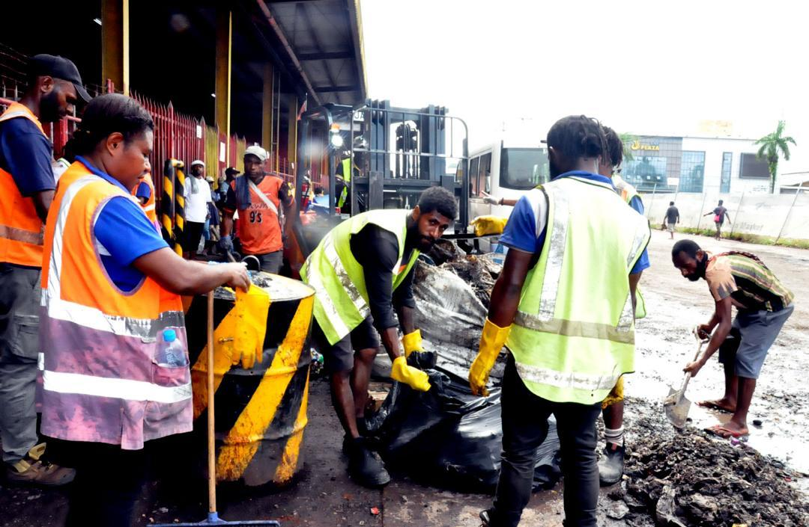
ACADEMIC EXCELLENCE
Huonville has consistently nurtured outstanding students who have excelled at Busu Secondary School, one of the top-performing secondary schools in the country. Many of the leading academic achievers in colleges and universities nationwide can trace their roots back to Huonville Primary School.
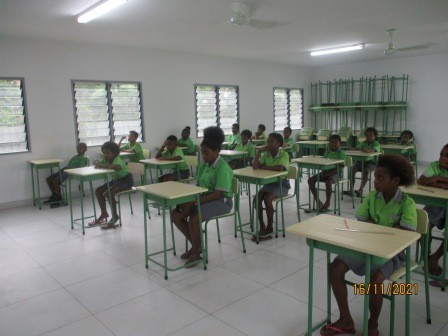 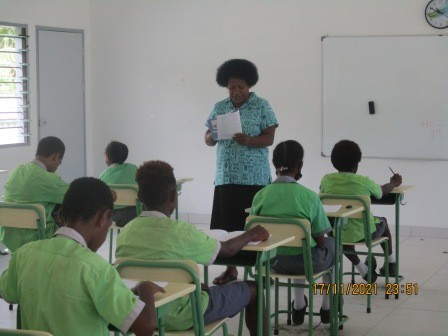 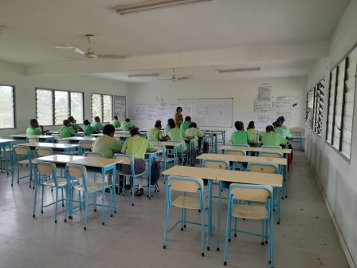
What people say about Huonville Primary School
Its a wonderful school to be in.Nice and comfortable for teachers and students. I have learnt alot whilst here.
Cathielyn Lot
Grade 8A Student-2025
I've seen this administration triump amidst numerous challenges, and continues to strive.
Salin Perry (Ms)
Grade 5 Teacher-2025
This school has legacy in producing interlectuals all over the country, and contiues to live up to its legacy.
Joe Blow
Parent & Ex-Student
Make Huonville your choice of Primary Education in 2025
Enroll now
CONTACT US